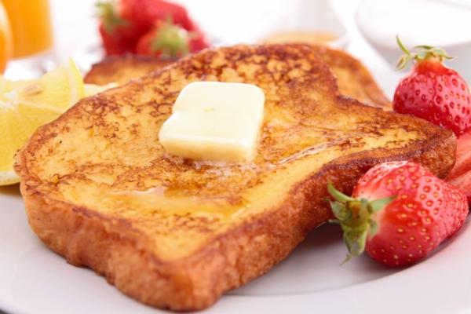

French toast recipe

Description
French toast is an easy but tasty way to have a breakfast, or even a dessert.
This recipe will give you an easy and fast way to make them!!
Ingredients
- Eggs
- Butter
- Vanilla
- Cinnamon
- Milk
- Box bread
Directions
- Put the eggs on a bowl and whisk them slowly.
- Add milk, vanilla and cinnamon while you whisk the eggs.
- Grease a skillet with the butter and cook the bread until it's brown on both sides.
- Serve warm.
- Enjoy!!!
Back to recipe list